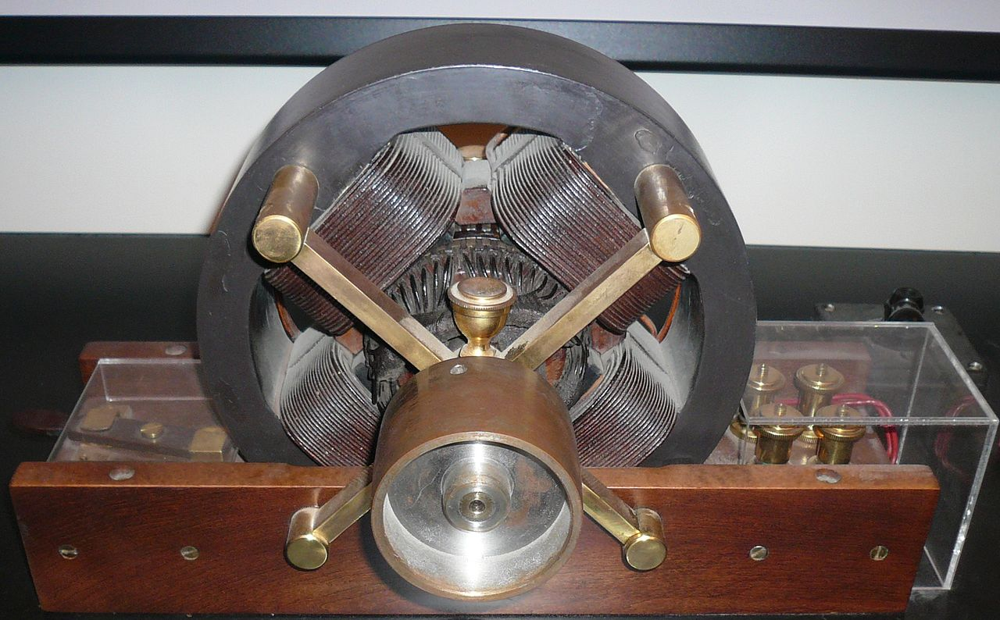

Motoarele de curent alternativ funcționează pe baza principiului câmpului magnetic învârtitor.
Acest principiu a fost identificat de Nikola Tesla în 1882. În anul următor a proiectat un motor de inducție bifazat,
punând bazele mașinilor electrice ce funcționează pe baza câmpului magnetic învârtitor. Ulterior,
sisteme de transmisie prin curent alternativ au fost folosite la generarea și transmisia eficientă la distanță a energiei electrice, marcând cea de-a doua Revoluție industrială. Motorul de inducție trifazat (sau motorul asincron trifazat)
este cel mai folosit motor electric în acționările electrice de puteri medii și mari.
Statorul motorului de inducție este format din armătura feromagnetică statorică pe care este plasată înfășurarea trifazată
statorică necesară producerii câmpului magnetic învârtitor. Rotorul este format din armătura feromagnetică rotorică
în care este plasată înfășurarea rotorică. Prin intermediul inducției electromagnetice câmpul magnetic învârtitor va induce
în înfășurarea rotorică o tensiune. Această tensiune creează un curent electric prin înfășurare și asupra acestei înfășurări
acționează o forță electromagnetică ce pune rotorul în mișcare în sensul câmpului magnetic învârtitor. Motorul se numește
asincron pentru că turația rotorului este întotdeauna mai mică decât turația câmpului magnetic învârtitor,
denumită și turație de sincronism. Dacă turația rotorului ar fi egală cu turația de sincronism atunci nu ar mai avea loc
fenomenul de inducție electromagnetică, nu s-ar mai induce curenți în rotor și motorul nu ar mai dezvolta cuplu.
